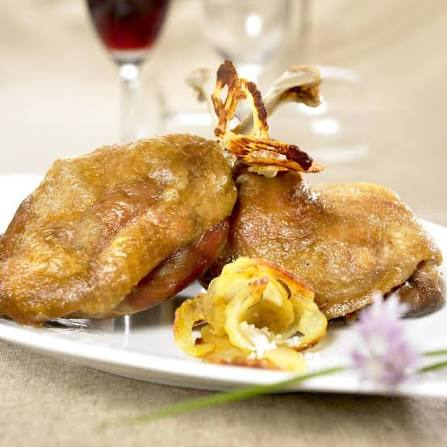

Confit
de canard


⟹ Plats Emblématiques ⟸
Le confit de canard est né d'une nécessité pratique bien avant d'être un plat de gastronomie : conserver la viande sans réfrigération. En salant puis en cuisant lentement les morceaux de canard dans leur propre graisse, les paysans gascons pouvaient stocker leurs récoltes de gavage pendant plusieurs mois, voire toute l'année.

Cette technique de conservation dans la graisse, immergeant complètement la viande pour l'isoler de l'air, remonte à plusieurs siècles dans le Sud-Ouest et concernait à l'origine surtout l'oie, avant que le canard mulard, plus facile à élever, ne devienne progressivement la viande de confit la plus répandue dans le Gers.
Le confit servait de base à de nombreux plats paysans de conservation hivernale, notamment la garbure, dans laquelle les cuisses de confit venaient enrichir la soupe de légumes en fin de cuisson. Il constituait ainsi une véritable réserve de protéines pour passer l'hiver.
Aujourd'hui, le confit de canard gersois est devenu un produit gastronomique à part entière, vendu en conserve ou sous vide, et se retrouve aussi bien réchauffé simplement à la poêle qu'intégré dans des recettes plus élaborées comme le cassoulet.
Le confit appartient à un véritable système d’économie domestique du canard gras : après l’abattage, les morceaux destinés à être conservés étaient salés, cuits doucement puis rangés dans des pots sous une couche de graisse. Cette méthode permettait d’échelonner la consommation de la viande pendant les mois où les produits frais étaient plus rares.
Le lien entre le confit et le territoire est aujourd’hui également encadré par l’IGP « Canard à foie gras du Sud-Ouest ». L’INAO précise que le confit fait partie des produits couverts par cette indication, aux côtés du foie gras, du magret et du magret séché ou fumé. La mention géographique « Gers » suppose que les différentes étapes prévues par le cahier des charges soient réalisées dans la zone concernée.
Au-delà de la cuisse servie entière, la viande confite est un ingrédient de transmission : effilochée, elle enrichit garbures, cassoulets, tourtes et préparations paysannes. La graisse récupérée est elle aussi traditionnellement conservée et utilisée pour cuire pommes de terre, légumes ou viandes.
Confit d'oie : la version historique, plus onctueuse, encore préparée par certains producteurs fidèles à la tradition ancienne.
Confit de canard aux cèpes : une variante d'automne où les champignons du Gers accompagnent la viande confite.
Confit dans le cassoulet : les cuisses confites viennent enrichir le cassoulet gersois aux côtés de saucisse et de haricots.
Confit maison vs industriel : le confit fermier, préparé et conservé en bocal, reste très recherché sur les marchés locaux.
Le confit de canard se déguste dans tout le Gers, des fermes-auberges aux tables plus gastronomiques, et se vend en conserve sur la plupart des marchés du département.
Samatan et Gimont et leurs marchés au gras proposent du confit fermier en conserve, directement issu des exploitations locales.
Auch et ses restaurants traditionnels servent le confit accompagné de pommes de terre sarladaises ou en garniture de cassoulet.
Fermes-auberges gersoises l'occasion de déguster un confit fermier, souvent issu du canard élevé sur place.